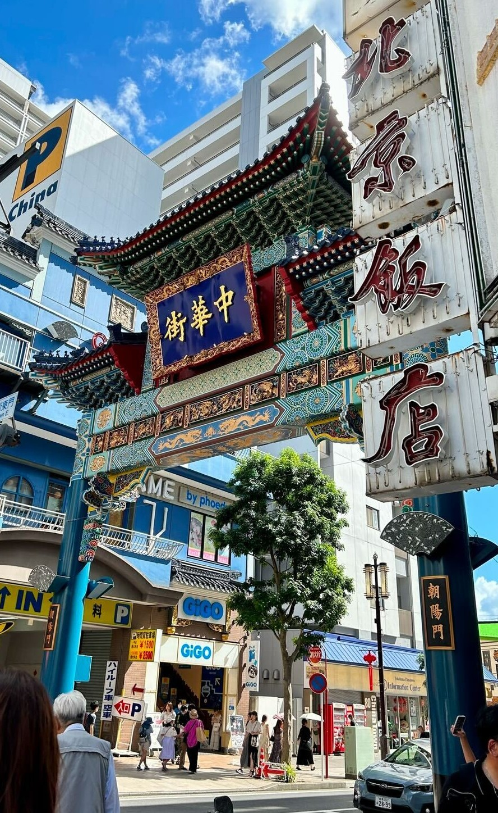

小江戸と呼ばれる川越は、昔ながらの蔵造りの街並みを歩きながら、名物のさつまいもスイーツや醤油団子を楽しめます。気軽に食べられるお菓子や小物グルメが豊富で、散策と一緒に味わうのが魅力です。
浅草では雷門から仲見世通りにかけて、揚げまんじゅうや人形焼、抹茶スイーツなど下町情緒あふれる食べ歩きが楽しめます。観光気分を味わいながら、昔ながらの味に出会えるのが魅力です。
日本最大級の中華街では、小籠包や肉まん、ゴマ団子など本格中華を気軽に食べ歩きできます。色とりどりの看板や香ばしい匂いに誘われながら、異国情緒を満喫できるスポットです。
